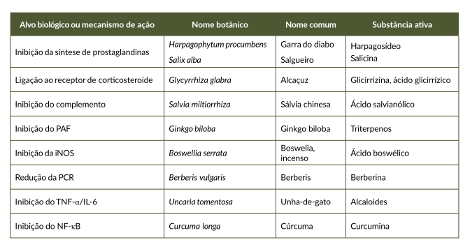

Considerando exclusivamente o critério de nível de evidência científica já consolidado, para o modelo farmacológico mencionado, no Quadro 3 estão exemplificadas plantas com atividade nos alvos biológicos de importância na terapêutica da inflamação.
Quadro 3. Exemplos de espécies de plantas medicinais com atividade anti-inflamatória

Legenda: PAF - fator de agregação plaquetária; iNOS - enzima óxido nítrico sintetase induzível; PCR - proteína C reativa; TNF-α - fator de necrose tumoral α; NF-κB -fator nuclear kappa B.
Fonte: o autor.